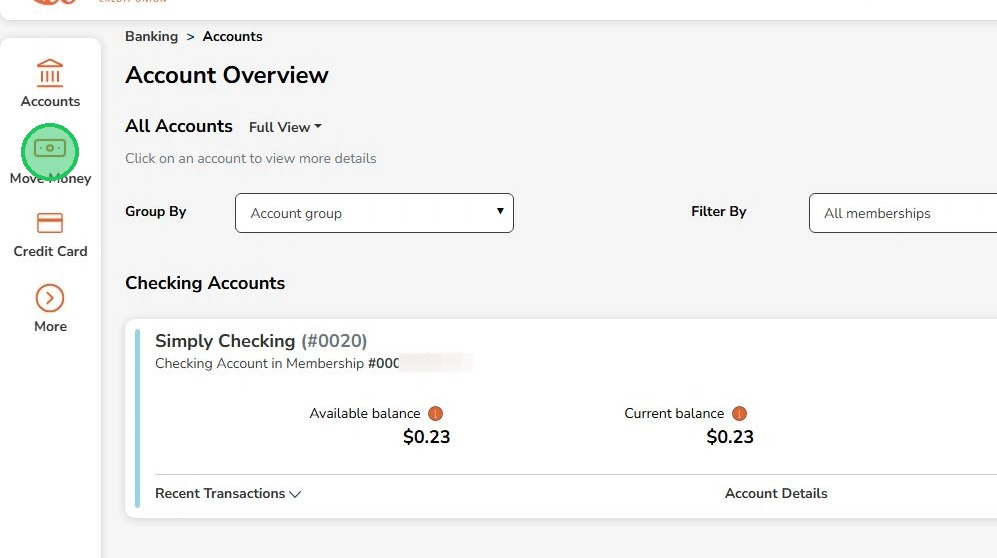
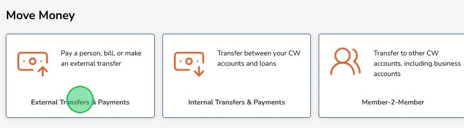
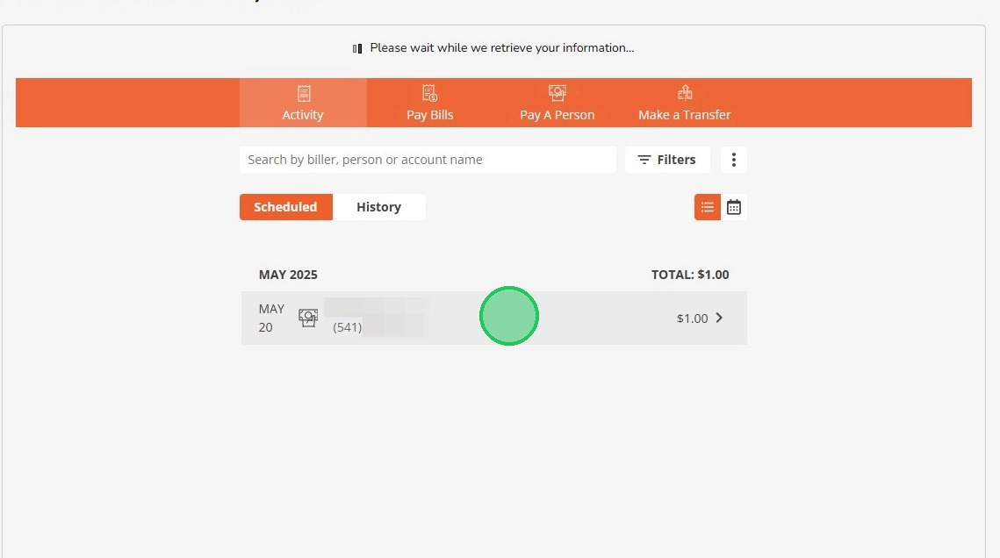
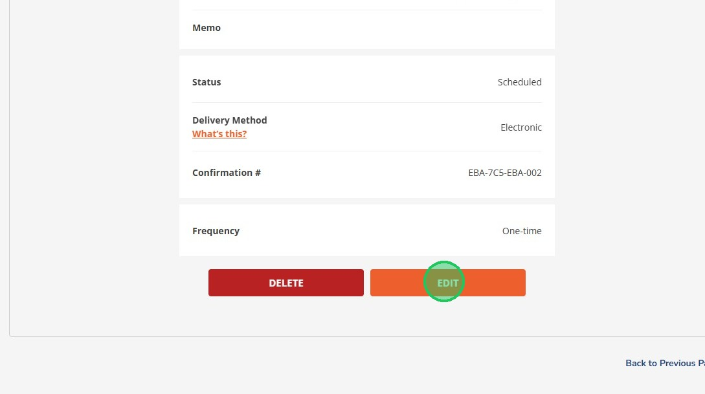
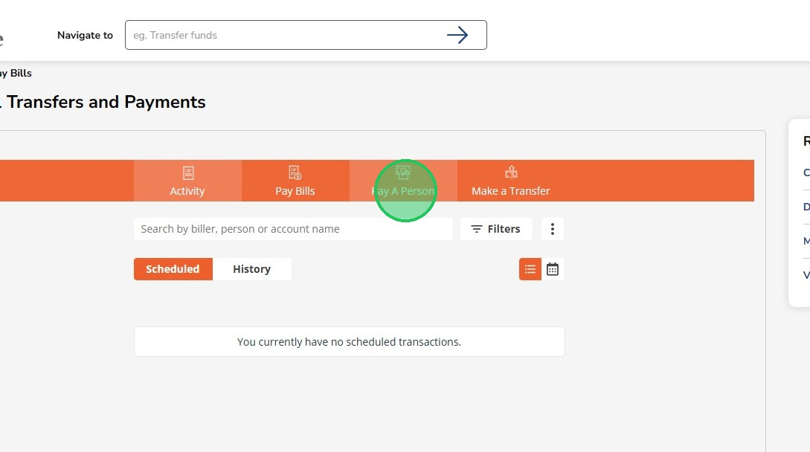
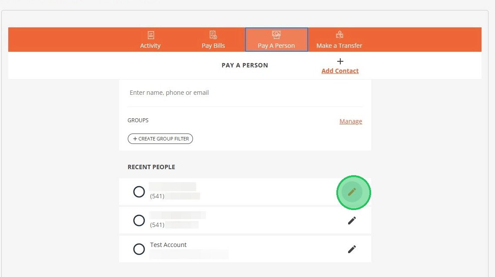
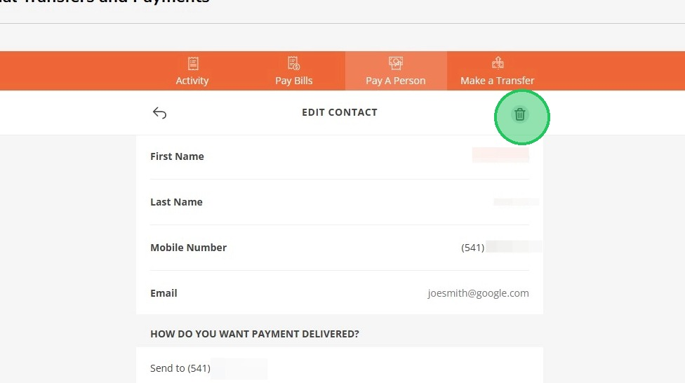
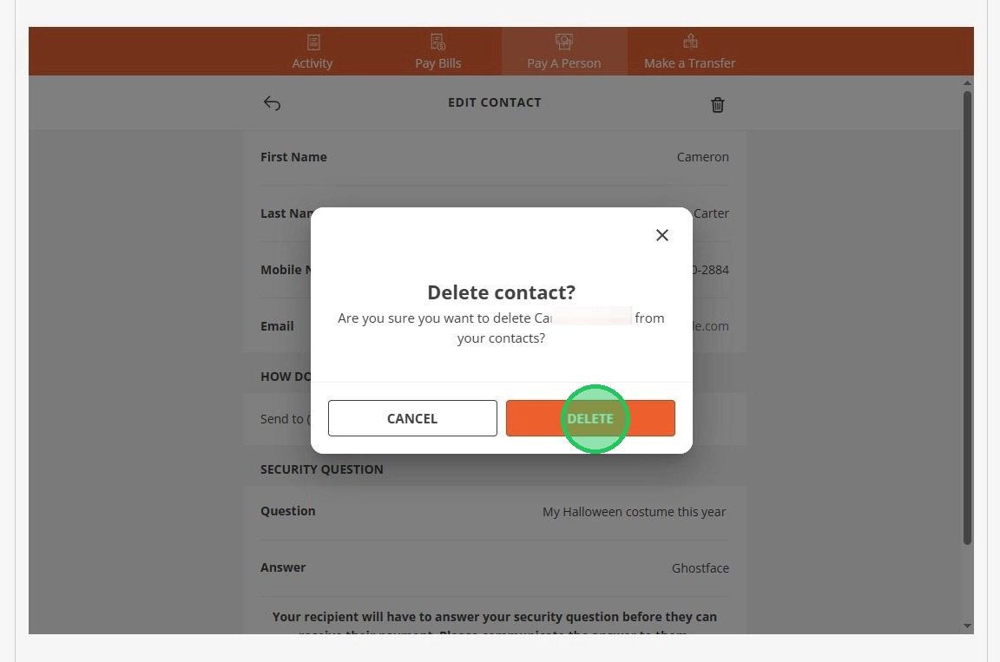

Edit or Delete External Payments
If you have set up a payment to another bank or person and need to cancel or remove it, follow these steps.
1
Click "Move Money"

2
Click "External Transfers & Payments"

Go to step 5 to delete a saved recipient!
3
Select the transaction to delete or edit

4
Scroll down and select delete or edit

5
Click "Pay A Person"

6
The pencil icon looks like a small drawing pencil. This means you can edit the information for that person. Click it to see more options.

7
The trash can icon means 'delete.' Click this to remove the person from your list.

8
Click "Delete"

If you have trouble deleting a payment or recipient, please contact the support team for help at the number below in the footer, or by submitting a ticket on the 'Support' page.